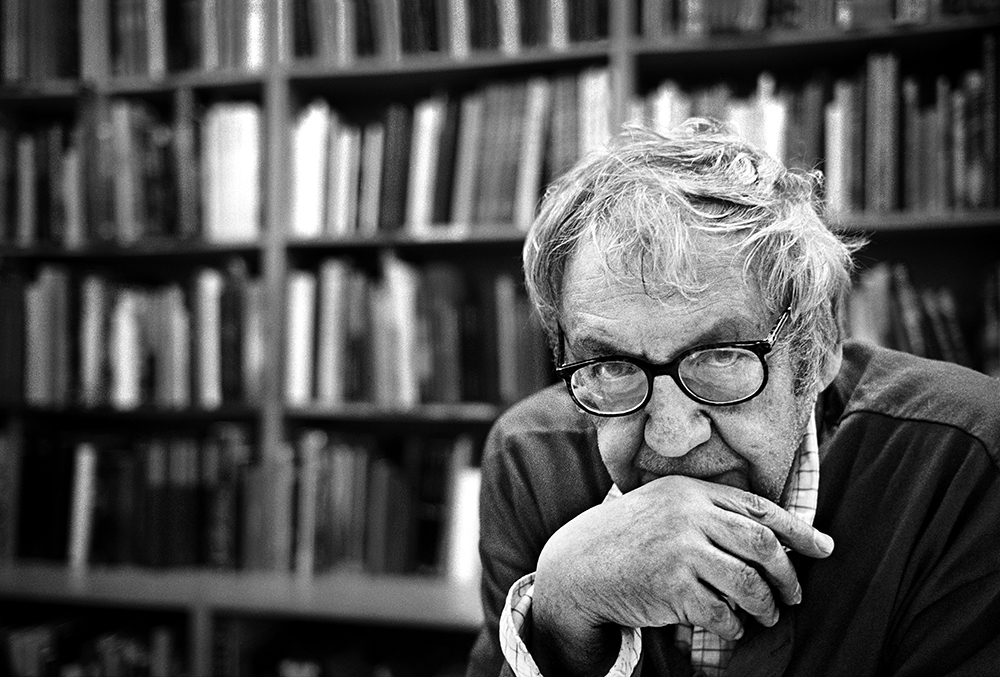

CC BY · Pierre Belhassen · Wikimedia Commons
Saul Leiter
1923 (Pittsburgh) – 2013 (Nova York)
Fotografia de color pionera · Pictorialisme urbà · Moda i art
Resum biogràfic
Pintor que va passar a la fotografia en arribar a Nova York el 1946. Va ser dels primers fotògrafs a usar el color com a eina artística (anys 50) quan el color era considerat purament comercial. Treballà durant anys per a revistes de moda (Harper's Bazaar) mentre la seva obra personal restava completament desconeguda. El 2006, una retrospectiva a la Fondation HCB de París el va revelar al gran públic. Va morir el 2013 sense haver vist el seu ple reconeixement internacional.
El seu segell
El carrer com a pintura. La fragmentació, els plans superposats, els reflexos als vidres, les figures desenfocades en primer pla. El color com a poesia, mai com a documentació.
Composició i pictorialisme
Primer pla desenfocador + figura al fons. Reflexos als aparadors. Vidres mullats. Paraigues. Colors subtils, mai saturats. El tele comprimeix els plans i crea superposicions pictòriques que recorden les seves pintures expressionistes.
Llum i atmosfera
Pluja, boira, vidres, reflexos. Prefereix la llum difusa i l'ambient fred. Evita el sol dur. La seva paleta és la del Kodachrome: colors rics però apagats, quasi pictòrics, que recorden els tons dels pintors del s.XIX.
Aproximació i temps
Lentíssim i contemplatiu. Sortia a caminar com qui surt a passejar, sense agenda ni llista de fotos a fer. Esperava hores per a una llum determinada. Mai la urgència del caçador — sempre la paciència del contemplador.
El teleobjectiu com a eina pictòrica
L'ús del tele (50–135mm) li permet fotografiar des de la distància i comprimir els plans. El resultat és una superposició de capes — figura, reflexo, paraigua, vidre — que recorda un quadre cubista. El desenfocament és deliberat, mai un error.
Canopy, New York, c. 1958
Early Color · Steidl · steidl.de
© Saul Leiter Foundation / Steidl
Red Umbrella, New York, c. 1955
Saul Leiter Foundation · saulleiterfoundation.org
© Saul Leiter Foundation
Through Boards, New York, 1957
Howard Greenberg Gallery · howardgreenberg.com
© Saul Leiter Foundation / HG Gallery